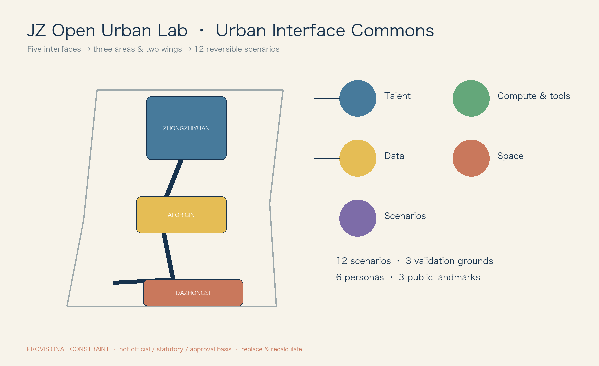

Urban Interface Commons: replaceable, auditable and reversible public interfaces for urban AI.
Provisional geometry only: not an official boundary, statutory control or approval basis. Recalculate in EPSG:4548 when official SITE_BOUNDARY and KEY_AREA are released.

12 differentiated scenario contracts, 3 validation grounds, 6 personas and 3 landmarks. Phase 1 uses reversible components and low-risk trials; phase 2 unifies contracts/logs; phase 3 publishes open standards and annual transparency reports. No CDN, remote scripts, tracking or autoplay.
See proposal.en.md, sources.json and copyright_statement.md for equivalent detail, sources and rights.